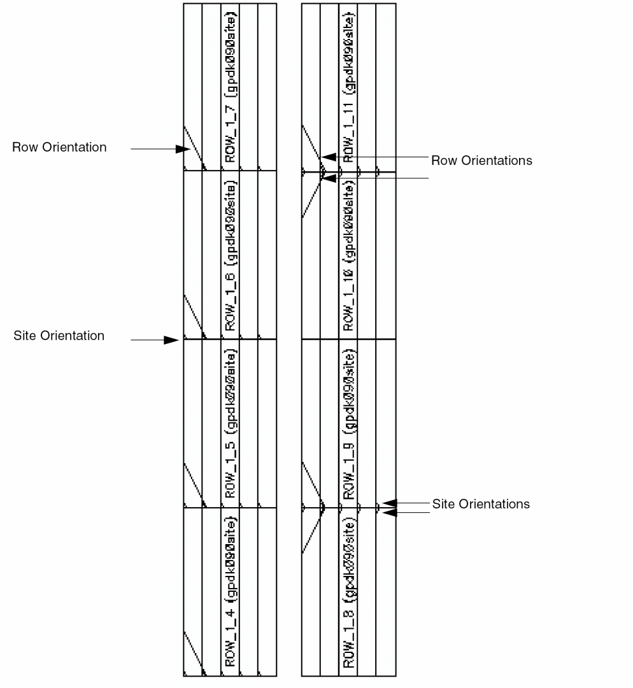

Creating Rows
-
Ensure the required site definitions are present in the
siteDefssection of the technology file. -
In the layout window, choose Create – P&R Objects – Row.
The Create Row form opens.
Opening the Create Row form turns on Row visibility in the Objects panel, even if you have previously turned it off. If site definitions are not present in the technology file, a warning message displays in the CIW, the Create Row form does not appear, and the command ends. - Specify row details in the Definition section as required.
-
Type the row name in the Base Name field.
When you enter the base name, an underscore is added followed by a number, which is greater than or equal to 1. As you enter new sites, each site is incremented by 1. For example, if your base name is ROW_1, the name assigned to the first site is ROW_1_1, the next is ROW_1_2, and so on. If you do not enter a custom row name, the software assigns the name row_number, which increments by 1 each time you add a site and rows. - Select the orientation of the row as Horizontal or Vertical.
-
Select the Starting Site Orientation.
All subsequent rows follow the orientation that you set in this field. The valid values are R0, R90, R180, R270, MX, MY, MXR90, and MYR90. - Specify the flip and abut settings for rows in Options. For example, you may set every other row to flip or set only the first row to flip. You may specify the number of rows to abut or set to abut the first and second rows. You can also specify the space between the rows to be created.
- Select the site definitions as core, pad, or both, based on which you want to filter the row created.
- Select the site from the Site Definition Name box whose elements are to be placed in the row. Selecting each site definition name one-by-one displays the dimension information about the site in the Site Information box.
-
Templates allow you to place rails and/or components automatically into the rows. Choose pre-existing rails or components or both to create the row. If pre-defined rails or components exist, they will display in the Pre-Defined pane. Select the ones you want to use for row creation one-by-one and move them to the Selected pane by using the left and right arrows.
Template definitions are associated only with the cellview in which they are defined. Therefore, the rail and component templates available to one cellview are not available to another cellview. -
Specify how the row should be created by choosing options in the Create Method section.
-
In the Assisted method, specify the Number of Rows to be created and the Number of Sites to be created for each row.
When you move the pointer to the canvas, the wireframe displays the number of rows specified in the form. Click the cellview at the position where you want to place the rows. Each row has the number of sites you specified in the form. When you open the form again, the last values entered in the fields are retained. -
In the Area Fill method, select the type of area you want for placing the rows, Rectangular, Rectilinear, or Partition. Then, drag and select the area on the canvas where you want to place the rows. The software calculates and creates the maximum number of rows in the selected area and creates the maximum number of sites for each row.
- Rectangular: Draw a rectangle. The software creates rows in the selected area until there is no more room in the rectangle for an additional row. Maximum number of sites are created for each row. If you set offsets, they are obeyed within the rectangular shape.
- Rectilinear: It works in the same way as for a rectangle, but the rows are of different lengths and widths depending on the shape of the polygons. If you set offsets, they are obeyed within the rectilinear shape. The rectilinear polygon must not be self intersecting.
- Partition: Create an area consisting of pre-defined areas by choosing either a PR boundary or snap boundary.
In the Area Fill method, you can specify Offset values to place asymmetrical rows in the boundary areas. The offset must be a floating number — one or greater than one. Set the distance from Top, Bottom, Left, and Right of the boundary in which the rows should not enter.
-
In the Assisted method, specify the Number of Rows to be created and the Number of Sites to be created for each row.
In the following example, the left image is Row Orientation as Horizontal, Starting Site Orientation is R0, Create Method is Assisted, Number of Rows is 4, Number of Sites is 5.
The right image also shows rows with the same settings, with additional settings Flip Every Other Row and Flip The First Row enabled and Abut set at 4 rows. This is useful to make rows more compact and if you have rails in the rows, place source at the top of the rows and ground at the bottom. This avoids shorts in the rows.

Related Topics
Return to top